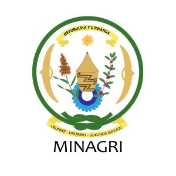
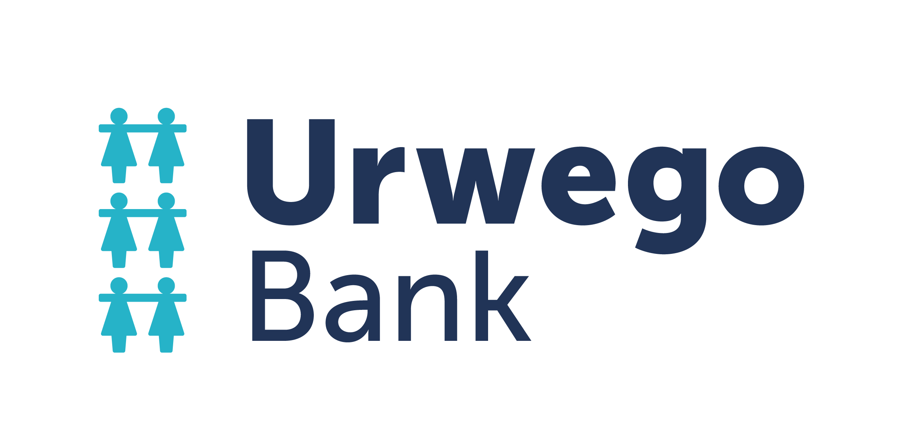

Overview
1. The potato seed sub sector in Rwanda faces different challenges that can be summarized as
follow:
- Inadequate supply of early generations’ seeds: vitro plants; mini tubers; pre-basic and basic seeds
- Supply of certified seeds dominated by the informal system
- Generalized shortage of certified seeds at the time of planting.
- Poor quality of seeds supplied to potato farmers.
- Poor business linkages among potato seed value chain actors.
- Potato is one of the most important food and cash crops in Rwanda.
- Its covers between 50,000-60,000ha, estimated at 3.9% of total cultivated land per each season
- Its contribution to total main crop production in Rwanda is estimated at 9.5%
- Its annual consumption per capita is estimated at 145kg
To address issues presented above, a Seed Potato Company was created by Seed producers through the
support
of MINAGRI.
Seed Potato Fund Joint Ventures Ltd (SPF IKIGEGA) is a farmer-led business which is active in the
collection, storage and marketing of seed potato; it’s have been created by seed potato producers
through the support of MINAGRI in 2015, and legally registered as a Limited Company.
As a grounds-roots initiative SPF Ikigega aims to address a key issue in the potato value chain of Rwanda:
The cycle of potato seed production take about 8 month (4 month to harvest and 4 month for germination)
and
seed multipliers are not able to wait until 8 month to sell their harvest and find money to use in
different needs (Living conditions, medical, Schools fees, etc). This causes seed potato multipliers to
sell their seed potatoes on the market as ware potatoes.
Quality mother tubers get eaten instead of
multiplied, seed multipliers get a low price and the next season farmers are forced to use informal or
even inappropriate potatoes as seed potato. This is a self-reinforcing trend with a negative impact on
the entire chain of input suppliers, multipliers, producers, traders, wholesalers, retailers and
consumers.
SPF Ikigega is addressing the issue described above by sourcing the harvested and multiplied seed
potatoes at the time of harvesting, storing these and making these available the next season.
SPF Model.
SPF-Ikigega business model consists of buying seed potato at harvesting time to avoid that
farmers can sell them as ware potato to the collection centres; in addition to that the provide
technical assistance to seed producers along the whole production process in collaboration with
RAB inspectors, to ensure the quality of seeds. The company ensures also that seeds are
transported from the field, stored, sorted, packed, labeled and delivered to the clients in good
conditions to avoid losses and ensure quality.
 G stands for Generation
G stands for Generation
The following chart show different generations of seed potato
production:
G stands for Generation
The production of in vitro plantlets (G0) is done in the tissue culture laboratory and the
production of mini-tubers (G1) is done in the screen houses. These minitubers are
planted in open fields to get pre-basic seeds (G2), basic seeds (G3) and G4 to get
certified seeds to be used by farmers for ware potato production.
Partners



